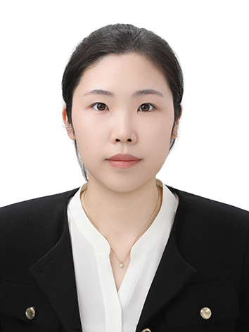

Principal Investigator
Sunjung Kang (강선정)
- Assistant Professor, Gwangju Institute of Science and Technology (GIST) 2026 – Present
-
Postdoctoral Researcher, Purdue University
2024 – 2026
Mentor: Christopher G. Brinton -
Ph.D. in Electrical and Computer Science and Engineering,
The Ohio State University
2024
Advisors: Atilla Eryilmaz and Ness B. Shroff -
M.S. in Computer Science and Engineering, UNIST
2018
Advisor: Changhee Joo - B.S. in Computer Science and Engineering, UNIST 2016
Students
New members will be added here as the lab grows.